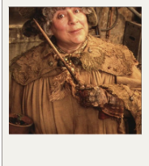

---------------------------------------------------------------------------------------"The most loyal and kindest school of all!"-----------------------------------------------------------------------------------------------
Pomona Sprout

Pomona Sprout is a witch and the head of Hufflepuff House at Hogwarts School of Witchcraft and Wizardry. She is also the professor of Herbology, where she teaches students about magical plants and their properties. Known for her nurturing demeanor, she is deeply passionate about plants and cares for her students with a motherly approach.
Pomona is depicted as knowledgeable, wise, and practical, with a strong sense of loyalty to her house and the students she teaches. During the events of the series, she plays a role in the fight against Voldemort and his followers, demonstrating her bravery and commitment to the fight for good.
Certainly! Here’s more about Professor Pomona Sprout:
### Background and Personality
- **House at Hogwarts**: Pomona Sprout was sorted into Hufflepuff House when she was a student at Hogwarts. This background influences her teaching style and values, emphasizing hard work, loyalty, and inclusivity.
- **Herbology Expertise**: As the Herbology professor, Sprout is an expert in magical plants and fungi. She teaches students how to care for various plants, their uses in potions, and their magical properties. Her classes often involve hands-on learning, such as tending to the Hogwarts greenhouses.
- **Nurturing Nature**: Pomona is known for her kindness and supportiveness. She fosters a welcoming environment for her students and is especially encouraging toward those who may struggle in other subjects.
### Role in the Series
- **Dumbledore’s Army**: During the events of "Harry Potter and the Order of the Phoenix," she supports the formation of Dumbledore’s Army, demonstrating her commitment to her students’ education and well-being.
- **Battle of Hogwarts**: Pomona plays a significant role in the final battle against Voldemort's forces. She uses her knowledge of plants to help defend Hogwarts, showcasing her bravery alongside other members of the staff and student body.
### Relationships
- **With Students**: She has a close relationship with her Hufflepuff students and takes pride in their achievements. Her approach is patient, and she often serves as a mentor to them.
- **With Faculty**: Pomona works closely with other faculty members, including Professor McGonagall and Professor Snape. Her dedication to Hogwarts and her fellow teachers is evident in her collaborative spirit.
### Notable Traits
- **Passion for Nature**: Sprout’s love for magical plants is a defining characteristic. She has a deep respect for nature and often speaks passionately about the importance of caring for the environment.
- **Practicality**: She is pragmatic and values hands-on experience, believing that understanding plants is crucial for a well-rounded magical education.
Pomona Sprout is a beloved character who embodies the values of Hufflepuff while contributing significantly to the wizarding world through her expertise and nurturing spirit.